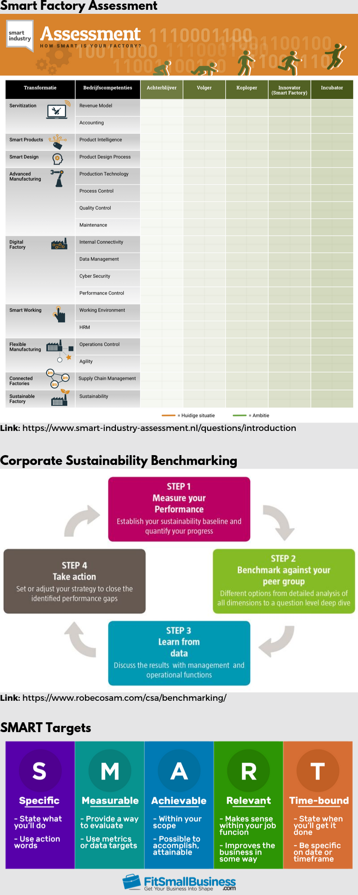

In dit tabblad worden alle opdrachten en progressies van SMART Start weergegeven.
Alle data wordt onderverdeeld per week.
In de eerste week kregen we een introductie over wat SMART Industry precies inhoud. Eigenlijk komt het er op neer dat er nog geen 'vaste' richtlijn hiervoor is. Om die reden wordt er van ons geacht dat wij onze eigen richtlijnen voor SMART Industry vast gaan stellen.
Als eerste opdracht moesten wij voor onszelf de volgende vraag beantwoorden: "Wat is SMART Research?"
Mijn persoonlijke mening is verwerkt in deze dia.
Als weekopdracht ben ik bezig geweest met kruispunten zoeken tussen mijn huidige studie en met SMART Industry. De resultaten hiervan zijn in dit artikel te vinden.
Deze week stond verder in het teken van de onderzoeksomgeving. In de les zijn we bezig geweest met het ontwerpen van een nieuw idee voor een potentiële partner. Samen met Roen en Eliza hebben wij gekozen voor ATAG.
ATAG is een bedrijf gespecialiseerd is kookapparatuur zoals (stoom)ovens, afzuigkappen, koelkasten/vriezers, kookplaten, vaatwassers en koffiemachines. ATAG wilt de ervaring in de keuken steeds makkelijker maken voor de consument en heeft hiervoor haar eigen applicatie ontwikkeld; ATAG Connect Life. Deze app zorgt er voor dat al het kookapparatuur van ATAG met elkaar in verbinding is.
De app heeft een aantal functies:
Wij hebben voor ATAG een Prezi gemaakt met een uitgewerkt idee voor een applicatie die alles in de keuken kan bijhouden en registreren. Daarnaast zijn wij ook dieper ingegaan op het concept van een SMART oven, koelkast en een koppeling met 'google assistant' en 'Alexa'.
Al deze nieuwe innovaties kunnen in de toekomst gekoppeld worden met Google-Home of SIRI. Op deze manier wordt de kookervaring nog beter, maar vooral makkelijker voor de consument.
In de derde week ben ik bezig geweest met het Value Proposition. Eigenlijk is het Value Proposition Design een opvolger van de ‘Value Proposition Canvas’ die eigenlijk inzoomt op een belangrijk onderdeel van een businessmodel, namelijk de waarde propositie.
Met het Value Proposition Design kijk je namelijk meer naar wat de klanten werkelijk willen en welke problemen je voor ze kunt oplossen (pains en gains). Je gaat dus kijken naar hoe je waarde kunt creëren voor de klant. Om erachter te komen hoe je waarde kunt creëren voor de klant is het van belang dat er op een gestructureerde manier de klantvraag achterhaald wordt.
Deze week zijn we bezig geweest met SMART processen. Bij mijn opleiding; Technische Bedrijfskunde op het Saxion in Enschede hebben wij momenteel (begin 3e leerjaar) nog niks gehad over risicomanagement. Dit vak komt pas in het tweede half jaar van het derde jaar (na de Minor dus) aan bod.
Procesoptimalisatie is wel aan bod gekomen in de vakken TEC en Operations Management. In de bijlage staat mijn eigen geschreven Essay naar Lean en Six Sigma in de zorgsector. Het nadeel van deze theorieën is dat deze eigenlijk best wel verouderd zijn en er momenteel niet echt een ‘vernieuwde’ theorie die is beschreven als Lean en Six Sigma. Over de toekomst van deze technologieën heb ik nog niet veel gehad op het Saxion, ik zit eigenlijk bij deze minor om hier meer van te leren.
Onderstaande video heb ik als casus gebruikt:
In deze video wordt er een mooie techniek beschreven waarbij er door middel van een simulatiesysteem het gehele productieproces wordt bijgehouden. Dit productieproces is volledig geautomatiseerd en worden er direct tests uitgevoerd om te checken of de producten daadwerkelijk aan de eisen voldoen. Ook kan er met de gemeten data onderzocht worden waar de voornaamste ‘bottlenecks’ zitten en kan er gedacht worden over een oplossing hiervoor.
Ik heb mijn casus gedaan over AUDI en haar SMART Factory. Daarvoor is onderstaand filmpje gebruikt en een artikel. Bekijk eerst dit artikel en het filmpje.
Artikel AUDIDeze fabriek van Audi is een perfect voorbeeld van een SMART Factory en Industry 4.0. Momenteel is het nog een testopstelling om te kijken hoe deze technieken gebruikt kunnen worden, maar het is al een stap dichter bij de toekomst en een mooi beeld van hoe de autofabrieken er in de toekomst uit kunnen gaan zien. Niet alleen omdat dit “de toekomst is”, maar ook om de concurrentiestrijd aan te gaan.
In deze fabriek worden de auto’s namelijk uit zichzelf, door middel van zelfsturende plateaus/drones, door de fabriek geleid. De ‘oude autoband van Henri Ford’ die al een eeuw lang mee gaat, is niet meer. In de fabriek bepalen de voertuigen hun eigen weg naar de handelingen die benodigd zijn voor dat desbetreffende exemplaar. Drones en robots zorgen ervoor dat alle noodzakelijke onderdelen voor de monteurs klaar liggen, die deze dan aan elkaar monteren. Als hulpmiddel wordt er met camera’s en schermen, naast de werktafel, aangegeven hoe de onderdelen gemonteerd dienen te worden. Mocht er dus iets niet goed gaan of is er iets nog niet gemonteerd, wordt dit aangegeven op het grote beeldscherm. Op deze manier wordt de auto per onderdeel in elkaar gezet tot één geheel.
Audi wil deze manier niet alleen gebruiken om de concurrentiestrijd qua kosten te winnen, maar ook om in te kunnen spelen op de behoeften en wensen van de klant. Zo kan Audi op deze manier de kleur, bekleding van de stoelen, ingebouwde elektronica, infotainment en dergelijke makkelijker in de auto plaatsen. Ook stelt de Lean-methodiek dat er verspillingen worden geminimaliseerd. Natuurlijk is Industry 4.0 een perfect voorbeeld van een geoptimaliseerd productieproces.
Week 5 stond in het teken van organisaties en de supply chain. Een organisatie is meer dan een verzameling van interne processen. Het staat in contact met haar externe omgeving en reageert hierop. De belangen van klanten, leveranciers, overheden en andere stakeholders komen hier samen en uiten zich in de transacties die continue tot stand komen.
De supply Chain is de afgelopen jaren flink veranderd. Het ambachtelijke idee van een supply chain (grondstof tot consument) is lang niet altijd meer een fysiek product of dienst. Door de hedendaagse technologie zijn er steeds meer nieuwe methoden ontwikkeld om diensten en/of producten te leveren aan de consument. In dit artikel wordt er met name in gegaan op de ‘Smart Supply Chain’.
Een technologie die er voor zorgt dat de supply chain smart wordt, is het Internet of Things. Het Internet of Things (IoT) maakt het mogelijk voor de gehele supply chain om gedigitaliseerd te worden met als doel; een digitale tweeling van de supply chain. De data die dit oplevert zorgt er voor dat processen geoptimaliseerd kunnen worden en kunnen zelfs nieuwe verdienmodellen ontstaan. Zoals het filmpje van Uber op het forum (Video) laat zien kan de data die gegenereerd wordt door de gebruikers gebruikt worden om de verdienmodellen van haar werknemers bepalen. Zo krijgen werknemers die meer ervaring hebben in het vak meer betaald dan beginners.
Artikel IOTHieronder een link naar mijn opdracht voor deze week:
Opdracht week 5De laatste week van SMART Start, week 6, stond in het teken van Smart Working. Bij smart working hoort ook een Missie en visie. De vorming van een visie is een belangrijk aspect van het strategisch managementproces. Dit proces bestaat uit de opeenvolgende fasen; situatieanalyse, strategievorming en planning en implementatie. Dit is een gestructureerde manier voor een bedrijf om de strategie te vormen.
Een belangrijk aspect binnen het strategisch managementproces is het bepalen van de missie en visie. De visie bestaat uit de missie en de principes van een organisatie. Een visie is een algemeen gedachtebeeld of voorstelling van de toekomst van de organisatie.
Een model om de visie te bepalen is het 7S-model van McKinsey. Dit model bestaat uit een zevental managementinstrumenten die allemaal even sterk met elkaar samenhangen:
De visie is als operationeel managementinstrument van invloed op de bedrijfsvoering;
Bron: Marcus & van Dam, Een praktijkgerichte benadering van Organisatie en Management, 2015
Naast deze opdracht zijn we bezig geweest in de les met bedenken wat we voor het seminar gaan doen. Meer hierover in het tablad; Project.
Tot slot ben ik met Coen, Djordi, Jille en Jeromme bezig geweest met onderstaande infographic:
